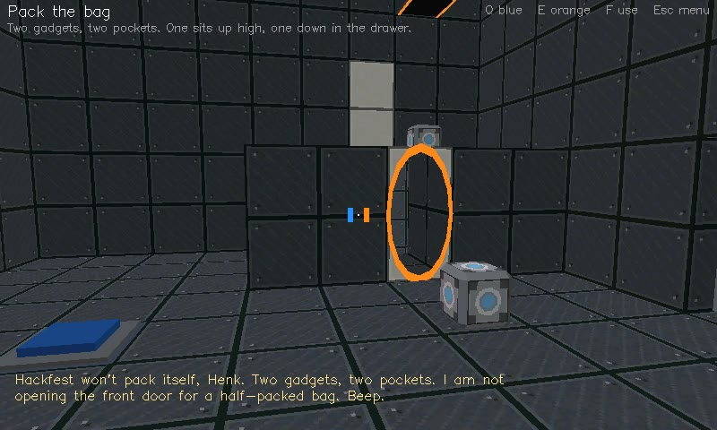

NewestA desk story · by annejan
Off to Hackfest
Hackfest is on Saturday, from noon, at Sickhouse in Enschede. A few things first. Geeky things.
- 8 chambers per playthrough, 12 in all
- 3 ways to get there
- ♪ hackfest
- 45 KB
- updated 14 Oct 2026
What's inside
- Pull requestThe merge button wants a cube. The cube is on the shelf.
- Reflow the badgeThe hot air is up on the shelf. The badge is down on the plate.
- Power banksOne launcher per power bank. Both banks full, or the front door stays shut.
- Pack the bagTwo gadgets, two pockets. One sits up high, one down in the drawer.
- By train
- Platform 11bThe train runs while the cube is on its button. The cube is on the rack.
- Change at AmersfoortCheck in at the pole. The doors close in two and a half seconds.
- By bike
- 160 km of headwindOrange gel makes you fast. Pour a run-up on the path, and jump at its end.
- The dykeBikes cannot climb a dyke. Bring the blue gel to its foot, and bounce.
- A lift
- Loading the vanThe gear is in the attic. The gap in the van is too high. The plate is not.
- Speed camerasThey watch the road, not the sky. Your cargo can take the scenic route.
- The Wi-FiThe funnel goes where the portals send it. The truss is six metres up.
- Daisy chainDaisy-chain the beam through both power strips to the stage. Meet the bridge.